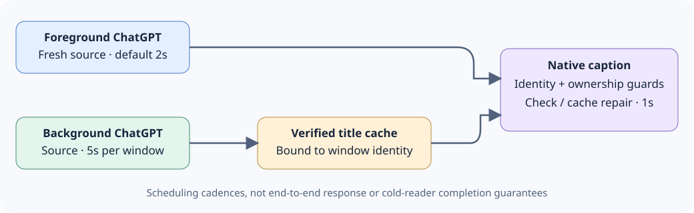

English · HTML · 支持矩阵 · 指南索引 · v0.1.0发布说明 · 路线图
用当前对话名标识原生 ChatGPT 窗口。英文项目名为 ChatGPT-TitleSync，当前为首次公开预览 v0.1.0。缺省前台来源每 2 秒读取、后台原生标题每 1 秒维护、后台来源每窗口 5 秒刷新。
用户已于2026-11-11明确批准公开发布。已确认仓库：ChatGPT-TitleSync。缺省启用当前用户登录自启动，见启动说明；不同实现的验证范围仍分别说明。
本次按语言目录逐文件推送源码、必要配套文件、文档与共享资源，采用正常仓库结构。不上传或提供项目自制ZIP下载。 可用Git获取目录树，再按实现指南运行：
git clone https://github.com/hpsun/ChatGPT-TitleSync.git
cd ChatGPT-TitleSync
已确认仓库地址为 https://github.com/hpsun/ChatGPT-TitleSync 。也可从对应语言目录打开或下载单个源码文件；需一并保留指南要求的伴随文件、图标及解释器/运行时依赖，不能把Python冻结目录当成仅一个EXE。GitHub若自动显示源码归档，那是平台生成的仓库视图，不是本项目上传ZIP。
期望的原生标题是“对话名 — ChatGPT”。它修改本地窗口的标签，不修改 ChatGPT 中保存的对话名称。
Windows 原生标题可作为任务栏单窗标签的来源，但本项目不修改应用分组、应用标识或固定快捷方式名称。macOS 窗口标题不同于应用 Dock 名称，本项目不重命名 Dock 应用；Mac 的标题可写性和显示效果仍待验证。
active 指 Windows 原生前台窗口。元数据检查仅核对 ChatGPT 身份及原生标题，不读取其他应用辅助内容；后台 ChatGPT 来源另按低频调度。macOS 设计仍需真实平台验证。
各语言自行实现监听、读取与改名逻辑，是替代方案，不包装调用 C# EXE。AutoHotkey 按运行时分别交付。
| 实现 | 平台与运行时 | 指南 |
|---|---|---|
| C# | Windows，.NET Framework 4.x | C# 应用 |
| AutoHotkey Basic | Windows，Basic 1.0.48.05 ANSI x86；启动／解释器／IPC 路径需 ASCII | Basic 兼容说明 |
| AutoHotkey v1.1 | Windows，Unicode v1.1.33+，x86/x64 | AHK v1.1 |
| AutoHotkey v2 | Windows，v2.0+，x86/x64 | AHK v2 |
| PowerShell | Windows PowerShell／Windows 上的 PowerShell，见实测版本 | PowerShell |
| Python | Windows，Python 3 标准库 | Python |
| Swift | macOS，Experimental 实验源码 | Swift／Objective-C |
| Objective-C | macOS，Experimental 实验源码 | Swift／Objective-C |
| Rust | Windows；macOS AX 后端为实验源码 | Rust |
| Go | Windows；macOS cgo／AX 后端为实验源码 | Go |
Windows分支均提供托盘扫描设置源码，Go/Rust与Python也可选择CLI。Swift/Objective-C原生菜单及Go/Rust公开osascript伴随菜单仍为Experimental，未在Mac编译或运行。
在本机构建两个 EXE，再运行应用：
cd windows/csharp
powershell.exe -NoProfile -File .\Build.ps1
.\ChatGPT-TitleSync.exe
激活一个原生 ChatGPT 窗口后才开始观察它。通过托盘 Exit and restore titles 或 ChatGPT-TitleSync.exe --stop 正常退出。选项和不写入的检查方法见 C# 指南。
每次选择一个实现。Windows 独立版本共用互斥量与停止事件；不要同时启用其它工具对同一窗口改名。
已有合法用户保存设置继续有效，显式命令行参数在启动时优先；无保存设置的新安装缺省前台2秒、后台5秒。

图中标注是调度间隔，不是端到端响应或冷读取完成保证。
| 层次 | 缺省频率 | 处理 |
|---|---|---|
| 原生元数据 | 1 秒 | 核对 ChatGPT 身份／标题；后台被改回通用标题时用绑定该身份的可信缓存修复 |
| 前台来源 | 2 秒 | 新鲜读取当前对话名，绝不用缓存代替本次读取 |
| 后台来源 | 每窗口 5 秒 | 单个串行、有期限的读取角色；前台优先 |
--interval 控制前台来源间隔，--background-interval 15 可将后台刷新设为 15 秒。范围和计时器边界见各指南。每秒调度不等于冷启动辅助读取一定在 1 秒内完成。
Windows 绑定 HWND、PID、进程创建身份、窗口类和程序路径。正常来源只沿有界原生辅助壳路径到 Document[RootWebArea].Name，不下探对话正文、不根据侧栏猜测。
后台缓存修复及新来源结果，只能写身份相同且当前为通用 ChatGPT 标题或仍由本写入者持有的窗口；非通用外部标题予以保留。未知后台窗口不凭空获得缓存，低频来源读取成功后才建立。前台始终取得新鲜来源。
C# 前台保持分别发布心跳Seq/HeartbeatUtc和来源SourceSeq/ObservedUtc原子快照的 watch；后台来源使用独立角色。二者的输出文件、取消信号、自有进程句柄和退出回收 Job 互相分离。私有身份缓存使升级后可继续维护身份未变的后台窗口。
正常退出只还原身份相同、且当前标题等于本次最后写入值的窗口，外部修改不覆盖。各语言分别实现监听；PowerShell 的内存 Add-Type 桥是标准互操作，不依赖外部 C# EXE。
本轮状态： 默认开启自启动的当前Windows修订正在重新实测。下方九路线记录属于此前源码，不代表本轮已经全部完成；Mac自启动与原生运行仍未验证。
支持矩阵 区分当前受控夹具、历史只读与未验证目标。当前 C# 组件检查含 41项策略/计时、13项watch/工作进程生命周期、8项来源间隔协议及12项设置检查。公开策略夹具复现同一组41项，不另重复累计。
fake／自有窗口证据不等于完整的独立托盘、安装、长期驻留或任务栏视觉验收。真实窗口验收及发布门槛另见本地验证摘要。
Swift、Objective-C 和 Go／Rust macOS 后端仍为 Experimental：未 Mac 编译，未真实 AX／窗口标题验收。共享模型不是原生 Mac 实测，远程 CI 定义不表示 CI 已运行。
私有缓存、诊断和工作快照可能含对话名及进程身份，应留在本地。生成的二进制、SDK／运行时下载、日志和验证证据不进入源码包。见指南索引。
C# 独立版真实窗口专项也已通过：前台标题切换、后台回改修复、可设后台调度及正常退出／helper 回收。单次观测为来源时间戳至首个原生标题样本约 0.516 秒、后台修复约 0.937 秒；这不等于长期、安装、完整托盘或任务栏视觉验收。
45号为基准：放大的ChatGPT主体，右上覆盖蓝紫色Title胶囊，粗等宽字体，取消蓝色外框。PNG、ICO、ICNS采用同一设计，选择元数据记录资源哈希。图标设置支持45—52固定配色或按周期随机更换。
assets/ 基准45、八色主题与历史候选
windows/csharp/ C# 应用与隔离读取器
windows/ahk-v1.0/ AutoHotkey Basic ANSI x86
windows/ahk-v1.1/ AutoHotkey Unicode v1.1
windows/ahk-v2/ AutoHotkey v2
windows/powershell/ 独立 PowerShell 脚本
windows/python/ 标准库 Python 脚本
macos/ Swift／Objective-C 实验源码
rust/ Rust Windows 与 Mac 实验后端
go/ Go Windows 与 Mac 实验后端
docs/guides-index.md 指南覆盖与待验证事项
support-matrix.json 机器可读验证状态
source-sha256.txt 相对路径源码／构建文件哈希
源码采用 MIT 许可。本版内容见v0.1.0发布说明，后续计划见路线图，验证边界见发布准备。
9个Windows运行时案例复用同3个现存ChatGPT窗口，各案例比对1个来源/页头目标、有效注入1次前台通用标题重置及1次后台重置，并检查正常退出后3窗为原通用标题。设置经绑定原生指令/同一菜单处理器调用，不冒称系统托盘物理右键已实测。下列为单次重置到首次匹配观测，不是基准、冷读取时限或长期/安装/任务栏保证；没有Mac原生编译或运行。
| 运行时 | 设置 | 前台复原 | 后台复原 | 退出 |
|---|---|---|---|---|
| C# | 2/5 → 3/10重开 → 2/5 | 1384ms | 781ms | 3窗原通用标题 |
| AHK Basic 1.0 | 2/5 → 3/10重开 → 2/5 | 1098ms | 632ms | 3窗原通用标题 |
| AHK v1.1 | 2/5 → 3/10重开 → 2/5 | 2247ms | 667ms | 3窗原通用标题 |
| AHK v2 | 2/5 → 3/10重开 → 2/5 | 1056ms | 409ms | 3窗原通用标题 |
| PowerShell 5.1 | 2/5 → 3/10重开 → 2/5 | 881ms | 794ms | 3窗原通用标题 |
| PowerShell 7 | 2/5 → 3/10重开 → 2/5 | 342ms | 282ms | 3窗原通用标题 |
| Python | 2/5 → 7/17重开 → 2/5 | 161ms | 379ms | 3窗原通用标题 |
| Rust | 2/5 → 3/10重开 → 2/5 | 1018ms | 624ms | 3窗原通用标题 |
| Go | 2/5 → 3/10重开 → 2/5 | 1784ms | 448ms | 3窗原通用标题 |
Python冷启动来源样本的原生标题仍通用；稍后有效前台重置的原标题指纹与独立来源完全一致，按跨时点证据记录。前两次前台守卫未注入重置，保留原档，不计产品失败。Python各项使用同一冻结EXE的不同启动批次；最终设置补证在同一进程中核验磁盘及重开控件精确7/17，再还原2/5。原先无法解释的33/10观察保留，不改写为已证产品缺陷。此前C#首显隐藏缺陷保留历史记录，表中使用修复后的最终EXE。